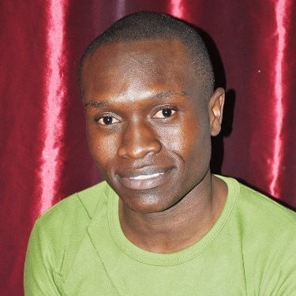

Trevor Ngwenya | WDD 130
Hi everyone! I'm Trevor, I live in Zimbabwe. I'm working towards an Applied Technology Degree with BYUI. I'm excited to be in WDD 130 learning web design with amazing people. I hope to get to know everyone and to learn a lot from you all. I love playing games and I'm currently playing the 2011 version of The Elder Scrolls: Skyrim. Yes! I know it's old, but for some reason I never got to play it when it first came out. Better late than never. I currently work as an animator for an Ad Agency and it's quite exciting. I am self taugh and I have enjoyed learning from my colleagues over the last two years. I hope to be a software engineer working on animation software or in the gaming industry. I also enjoy simming and playing chess.